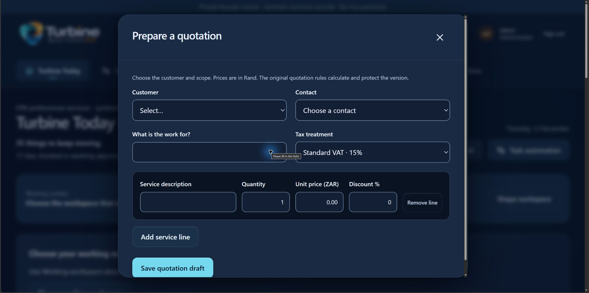
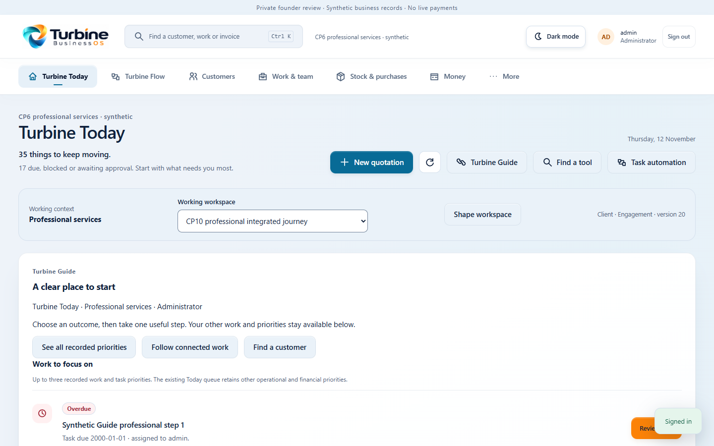

Turbine Today — the operational starting point
The Today view brings recorded priorities, guided next actions and working context into one place. It is designed to help a business owner or team member understand what needs attention before opening individual modules.
Turbine Flow — follow the business journey
The Flow view presents customer, quotation, acceptance, work, invoice and payment stages together. It helps users understand progress without turning the visual journey into a separate system of record.
Quotations — commercial control
The quotation experience demonstrates structured data entry, customer and contact selection, service lines and tax treatment. Actual calculations, version controls and downstream acceptance are governed by the qualified application rules.
Desktop and mobile — one coherent experience
The same operating model is designed to remain usable on smaller screens. Responsive qualification, accessibility and zoom behaviour are engineering acceptance criteria, not marketing decoration.
Actual qualification screenshots
These images show synthetic test data, not a live customer environment.



